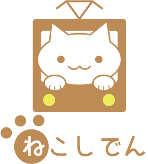

- 現代人はなかなか自分をいたわる時間を取ることができないように感じます。
そんな人たちの移動時間を気軽に癒しの時間に変える。
それがねこしでんです。

- 大きなねこのプリント
- 注目を集めるためのインパクト重視のデザイン
- ねこしでん効果
- ねこしでんを利用することで次のような効果が期待できます。

- 里親が見つかる
- 多くの人の身近にある市電が里親探しの場になることで、里親が見つかりやすくなる。

- 癒しの時間を得られる
- 市電での移動時間に気軽にネコと触れ合う癒しの時間を得られる。
- 利用者の増加が期待できる
- ネコのいる市電を提供することで、普段市電に乗らない人にも市電を利用してもらえる可能性が増える。

- 函館市電のフィールドワーク

- イベントというアイデアを元に、"ねこしでん"の提案

- 中間発表で得たフィードバックを元にアイデアのブラッシュアップ
→完成